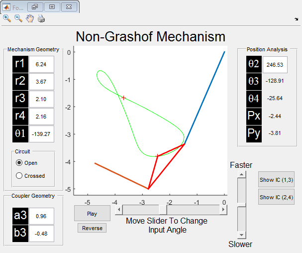

Contents
clear; clc;
alpha2 = deg2rad(147.5-210);
p21 = -1.236 + 2.138*1i;
delta2 = atan2(imag(p21),real(p21));
z = 1.075;
phi = deg2rad(204.4);
beta2 = deg2rad(-27);
s = 1.24;
psi = deg2rad(74);
gamma2 = deg2rad(-40);
Zx = z*cos(phi);
Zy = z*sin(phi);
Z = z*exp(1i*phi);
S = s*exp(1i*psi);
Sx = real(S);
Sy = imag(S);
A1 = cos(beta2)-1;
B1 = sin(beta2);
C1 = cos(alpha2)-1;
D1 = sin(alpha2);
E1 = abs(p21)*cos(delta2);
F1 = abs(p21)*sin(delta2);
Wx = (A1*(-C1*Zx + D1*Zy + E1) + B1*(-C1*Zy - D1*Zx + F1))/(-2*A1);
Wy = (A1*(-C1*Zy - D1*Zx + F1) + B1*(C1*Zx - D1*Zy - E1))/(-2*A1);
W = Wx +1i*Wy;
A2 = cos(delta2)-1;
B2 = sin(delta2);
C2 = cos(alpha2)-1;
D2 = sin(alpha2);
E2 = abs(p21)*cos(delta2);
F2 = abs(p21)*sin(delta2);
Ux = (A2*(-C2*Sx + D2*Sy + E2) + B2*(-C2*Sy - D2*Sx + F2))/(-2*A2);
Uy = (A2*(-C2*Sy - D2*Sx + F2) + B2*(C2*Sx - D2*Sy - E2))/(-2*A2);
U = Ux + 1i*Uy;
Other Plotting Necesities
V = Z-S;
G = W+V-U;
Display Solution
disp(['Link 1 has length ' num2str(abs(G))]);
disp(['Link 2 has length ' num2str(abs(W))]);
disp(['Link 3 has length ' num2str(abs(V))]);
disp(['Link 4 has length ' num2str(abs(U))]);
pp = [W+Z; W+Z+p21];
Four_Bar([W Z U S],pp,'play');
Link 1 has length 6.2373
Link 2 has length 3.6702
Link 3 has length 2.1026
Link 4 has length 2.1562
